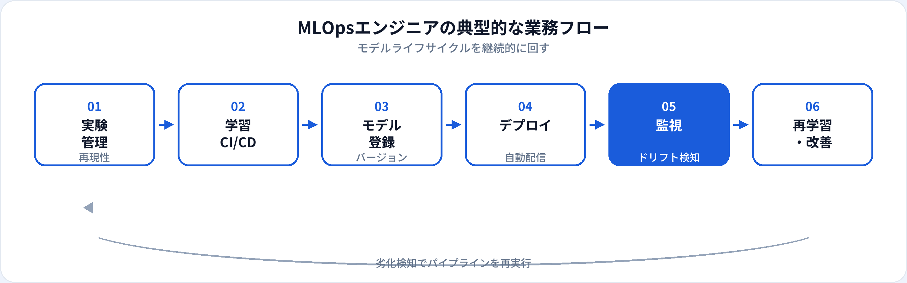

MLOpsエンジニア（MLOps Engineer）は、機械学習モデルを継続的に開発・デプロイ・監視・改善するためのパイプラインと基盤を構築する専門職です。機械学習エンジニアがモデル精度に注力するのに対し、MLOpsエンジニアは再現性・信頼性・自動化を軸に、PoCで終わらない運用体制を整えます。本記事では、AIエンジニアとの違い、年収、スキル、未経験からの道のりを2026年6月時点の市場感覚で整理します。
資格・学習との関係
MLOpsエンジニアに必要なのは、コンテナ操作だけでなく、モデル・データ・コード・評価・運用を一体管理するという考え方の理解です。G検定ではMLOpsが「モデルを作って終わりにしない」運用の仕組みであることが問われ、実務面接では「ドリフト検知後に何を自動化するか」が議論されることが多いです。
よくある誤解は、「MLOps＝Kubernetesが使えれば十分」という考え方です。インフラ力は重要ですが、ML特有の課題（データスキーマ変更、特徴量のリーク、オフラインとオンラインの乖離）への理解がないと、動くパイプラインだけ作って品質が担保できないケースがあります。
MLOpsエンジニアとは
MLOpsエンジニアは、MLOps Engineerとして、組織内の機械学習モデルをソフトウェアのように継続的にリリースできる環境を整えるエンジニアです。DevOpsがアプリケーションのCI/CDを担うのに対し、MLOpsは学習ジョブ・モデルアーティファクト・推論サービス・監視アラートまでを一連のライフサイクルとして設計します。
生成AIの普及以降、LLMの評価パイプラインやRAGのインデックス更新ジョブもMLOpsの対象に含まれるチームが増えています。生成AIエンジニアがプロンプトと機能を作り、MLOpsエンジニアが配信基盤と品質ゲートを支える、という分担も見られます。
仕事内容
組織によって分担は異なりますが、MLOpsエンジニアに期待されやすい業務は次のとおりです。

実験管理・再現性
MLflow等でパラメータ・メトリクス・成果物を記録。シード・データスナップショットで再現可能にする。
学習パイプラインのCI/CD
データ更新をトリガーに学習ジョブを自動実行。コード・依存関係のテストを組み込む。
モデルレジストリ
バージョン管理、承認フロー、ステージング→本番の昇格ルール。ロールバック手順の整備。
推論サービスのデプロイ
バッチ・リアルタイムAPI・オートスケール。カナリアリリースやシャドウデプロイの設計。
監視・ドリフト検知
予測分布・特徴量分布・レイテンシ・エラー率のモニタリング。閾値超過時のアラート。
再学習・インシデント対応
性能劣化時の再学習トリガー、手動承認ゲート、ポストモーテムとパイプライン改善。
必要スキル
| 領域 | 具体例 | 重要度の目安 |
|---|---|---|
| Python / インフラ | Docker、Kubernetes、Terraform、GitHub Actions | 必須 |
| クラウドMLサービス | SageMaker、Vertex AI、Azure ML、Databricks | 求人により必須級 |
| MLOpsツール | MLflow、Kubeflow、Weights & Biases、Evidently | 必須 |
| MLの基礎理解 | 評価指標、データリーク、オフライン/オンライン差 | 実務で差がつく |
| SRE・可観測性 | Prometheus、Grafana、ログ集約、SLI/SLO | 中級以上で重視 |
年収相場
当サイトの職種マスタでは、MLOpsエンジニアの年収目安を600万〜1,350万円としています（2026年6月時点の一般的な相場感）。機械学習エンジニアと同水準〜やや上振れする求人もあり、大規模トラフィックの推論基盤やマルチテナントのMLプラットフォームを設計できると上限が上がりやすいです。
| 区分 | 年収の目安（日本・一般論） | 補足 |
|---|---|---|
| ジュニア | 600万〜800万円前後 | 既存パイプラインの運用・改善から入る |
| ミドル | 800万〜1,100万円前後 | 学習〜デプロイ〜監視まで設計・構築 |
| シニア | 1,100万〜1,350万円以上 | 社内MLプラットフォーム・アーキテクチャ統括 |
キャリアパス
-
MLプラットフォームエンジニア
特徴量ストア、モデルサーブ、共通パイプラインの共通化。組織横断の基盤担当へ。
-
SRE / インフラアーキテクト
可用性・コスト最適化・マルチリージョン。ML以外の基盤にもスキルを広げる。
-
機械学習エンジニア寄り
モデル開発の比重を上げ、パイプラインと学習コードの両方を担うフルスタックMLへ。
-
テックリード・EM
MLチーム全体のリリースプロセス・品質基準・インシデント体制を統括。
関連職種との違い
| 職種 | 主な焦点 | MLOpsエンジニアとの違い |
|---|---|---|
| AIエンジニア | AI機能の実装全般 | より広い肩書き。MLOpsは運用・自動化・監視に特化。 |
| 機械学習エンジニア | モデル開発・学習・デプロイ | モデル精度・特徴量設計の比重が高い。MLOpsはパイプライン基盤寄り。 |
| 生成AIエンジニア | LLM・RAG・エージェント | アプリケーション層の実装が中心。MLOpsは配信・評価基盤を支える。 |
| DevOps / SRE | アプリのCI/CD・信頼性 | ML特有のデータ・モデルバージョン管理が加わる点が異なる。 |
未経験からの道のり
-
Linux・Docker・Gitの基礎（1〜2か月）
コンテナでアプリを動かし、CIでテストを回せる状態に。
-
クラウドとPython（2〜3か月）
マネージドMLで学習ジョブを実行。G検定でMLOpsの用語を整理。
-
end-to-endパイプライン（1〜2か月）
学習→モデル登録→推論API→簡易監視までを一つのリポジトリで再現。
-
ドリフト検知・再学習（任意）
スケジュール再学習や承認ゲートを盛り込み、ポートフォリオに記載する。
メリット・デメリット
| メリット | デメリット |
|---|---|
| 組織のAI活用を「続く仕組み」にできるインパクトが大きい | モデル開発より地味に見られ、成果が見えにくいことがある |
| DevOps・SREからの転職ルートが明確 | MLの基礎理解がないと設計ミスに気づきにくい |
| 需要はAI本番化が進むほど安定しやすい | ツールチェーンが多く、学習範囲が広い |
| プラットフォーム・SREへキャリアを広げやすい | オンコール・インシデント対応の負荷が重いチームもある |
よくある質問
MLOpsエンジニアと機械学習エンジニアの違いは？
機械学習エンジニアはモデル開発・学習・デプロイまで幅広く担うことが多く、MLOpsエンジニアは継続的デリバリー・監視・再学習パイプラインに比重が置かれることが多いです。詳しくは機械学習エンジニアの解説も参照してください。
MLOpsエンジニアに必要なスキルは？
Python、Docker/Kubernetes、CI/CD、クラウド、モデルレジストリ・監視ツールの経験が求められます。DevOpsやSREの経験をML文脈に応用できると採用側は評価しやすいです。
MLOpsエンジニアの年収相場は？
経験・企業規模により幅がありますが、おおむね600万〜1,350万円前後が目安となることが多いです（2026年6月時点の一般的な相場感）。
インフラエンジニアからMLOpsエンジニアになれますか？
可能です。CI/CD、コンテナ、監視の経験を活かしつつ、機械学習の評価指標・データドリフト・モデルバージョニングの基礎を学ぶのが典型的な移行パターンです。
MLOpsとLLMOpsの違いは？
LLMOpsは大規模言語モデル向けの運用実践（プロンプト版管理、RAGインデックス更新、トークンコスト監視など）を指すことが多く、MLOpsの考え方を生成AI領域に適用したものと捉えられます。